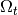
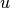
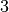
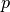

Finite strain Elasticity bricks
This brick implements some classical hyperelastic constitutive law for large deformation elasticity.
Some recalls on finite strain elasticity
Let be the reference configuration and  the deformed configuration of an elastic media. Then for we will denote by the deformation. the vector field  is the displacement with respect to the initial position.
The Cauchy-Green tensor is defined by
The deformation tensor (Green-Lagrange)
(In the case of linear elasticity, is neglected).
One has
Both tensors  and
and  are used to describe finite strain elasticity constitutive laws.
are used to describe finite strain elasticity constitutive laws.
Main invariants and derivatives
The description of finite strain elasticity constitutive laws often requires the principal invariants of the deformation tensors:
are the invariants of orders and :
The derivatives of the invariants with respect to the tensor in the direction  are:
are:
We will write
Let us also recall that
The second derivatives of the invariants are fourth order tensors defined by
The notation denotes the Frobenius product . This product has the following properties:
Note also that
This property enables us to write the constitutive laws as a function of the Cauchy-Green tensor invariants, especially for the case of the generalized Blatz-Ko strain energy.
Potential elastic energy and its derivative
The stress in the reference configuration can be describe by the second Piola-Kirchhoff stress tensor where  is the Cauchy stress tensor in the deformed configuration . An hyper-elastic constitutive law is given by
is the Cauchy stress tensor in the deformed configuration . An hyper-elastic constitutive law is given by
where  is the density of strain energy of the material. The total strain energy is given by
is the density of strain energy of the material. The total strain energy is given by
and the derivative of the energy in a direction  can be writen
can be writen
because in particular
and when A is symmetric which is the case for .
Another way is to consider the static equilibrium which can be written as follows in the reference configuration:
Integrating by parts, one obtains:
Tangent matrix
The displacement is fixed. In order to obtain the tangent matrix, one subsitutes with
and considers the linear part w.r.t.  , which is
, which is
which is symmetric w.r.t. and . It can be rewritten as
where  is the symmetric
is the symmetric  tensor given by .
tensor given by .
Some classical constitutive laws
Three parameters Mooney-Rivlin law
Compressible material.
where , and are given coefficients and
and then
Incompressible material.
The incompressibility constraint is handled with a Lagrange multiplier  (the pressure)
constraint:
Ciarlet-Geymonat law
with  the Lame coefficients and (see [ciarlet1988]).
the Lame coefficients and (see [ciarlet1988]).
Generalized Blatz-Ko law
Since , and  we must compute the derivatives of the strain energy function with respect to the Cauchy-Green tensor invariants (we don’t need to compute the invariants derivatives with respect to since ) :
we must compute the derivatives of the strain energy function with respect to the Cauchy-Green tensor invariants (we don’t need to compute the invariants derivatives with respect to since ) :
Plane strain hyper-elasticity
All previous models are valid in volumic domains. Corresponding plane strain 2D models can be obtained by restricting the stress tensor and the fourth order tensor to their plane components.
Add an nonlinear elasticity brick to a model
This brick represents a large strain elasticity problem. It is defined in the files getfem/getfem_nonlinear_elasticity.h and getfem/getfem_nonlinear_elasticity.cc. The function adding this brick to a model is
ind = getfem::add_nonlinear_elasticity_brick
(md, mim, varname, AHL, dataname, region = -1);
where AHL is an object of type getfem::abstract_hyperelastic_law which represents the considered hyperelastic law. It has to be chosen between:
getfem::SaintVenant_Kirchhoff_hyperelastic_law AHL;
getfem::Ciarlet_Geymonat_hyperelastic_law AHL;
getfem::Mooney_Rivlin_hyperelastic_law AHL(compressible, neohookean);
getfem::plane_strain_hyperelastic_law AHL(pAHL);
getfem::generalized_Blatz_Ko_hyperelastic_law AHL;
The Saint-Venant Kirchhoff law is a linearized law defined with the two Lame coefficients, Ciarlet Geymonat law is defined with the two Lame coefficients and an additional coefficient ().
The Mooney-Rivlin law accepts two optional flags, the first one determines if the material will be compressible () and the second one determines if the material is neo Hookean (). Depending on these flags one to three coefficients may be necessary. By default it is defined as incompressible and non neo Hookean, thus it needs two material coefficients (, ). In this case, it is to be used with the large strain incompressibility condition.
The plane strain hyperelastic law takes a pointer on a hyperelastic law as a parameter and performs a 2D plane strain approximation.
md is the model variable, mim the integration method, varname the string being the name of the variable on which the term is added, dataname the string being the name of the data in the model representing the coefficients of the law (can be constant or decribe on a finite element method) and region is the region on which the term is considered (by default, all the mesh).
The program nonlinear_elastostatic.cc in tests directory and demo_nonlinear_elasticity.m in interface/tests/matlab directory are some examples of use of this brick with or without an incompressibility condition.
Note that the addition of a new hyperelastic constitutive law consists in furnishing the expression of the strain energy, the stress tensor and the derivative of the stress tensor. See the file getfem/getfem_nonlinear_elasticity.cc for more details. In particular, expression of the invariants and their derivatives are available.
A function which computes the Von Mises or Tresca stresses is also available:
VM = compute_Von_Mises_or_Tresca
(md, varname, AHL, dataname, mf_vm, VM, tresca)
It returns a vector of the degrees of freedom of the Von Mises or Tresca stress on the finite element method mf_vm. tresca is a boolean whose value should be true for Tresca stress and false for Von Mises stress.
Add a large strain incompressibility brick to a model
This brick adds an incompressibility condition in a large strain problem of type
A Lagrange multiplier representing the pressure is introduced in a mixed formulation. The function adding this brick to a model is
ind = add_nonlinear_incompressibility_brick
(md, mim, varname, multname, region = -1)
where md is the model, mim the integration method, varname the variable of the model on which the incompressibility condition is added, multanme the multiplier variable corresponding to the pressure (be aware that at least a linear Ladyzhenskaja-Babuska-Brezzi inf-sup condition is satisfied between the f.e.m. of the variable and the one of the multiplier). region is an optional parameter correponding to the mesh region on which the term is considered (by default, all the mesh).
High-level generic assembly versions
The weak form language gives access to the hyperelastic potential and constitutive laws implemented in GetFEM++. This allows to directly use them in the language, for instance using a generic assembly brick in a model or for interpolation of certain quantities (the stress for instance).
Here is the list of nonlinear operators in the language which can be useful for nonlinear elasticity:
Det(M) % determinant of the matrix M
Trace(M) % trace of the matrix M
Matrix_i2(M) % second invariant of M (in 3D): (sqr(Trace(m)) - Trace(m*m))/2
Matrix_j1(M) % modified first invariant of M: Trace(m)pow(Det(m),-1/3).
Matrix_j2(M) % modified second invariant of M: Matrix_I2(m)*pow(Det(m),-2/3).
Right_Cauchy_Green(F) % F' * F
Left_Cauchy_Green(F) % F * F'
Green_Lagrangian(F) % (F'F - Id(meshdim))/2
Cauchy_stress_from_PK2(sigma, Grad_u) % (Id+Grad_u)*sigma*(I+Grad_u')/det(I+Grad_u)
The potentials:
Saint_Venant_Kirchhoff_potential(Grad_u, [lambda; mu])
Plane_Strain_Saint_Venant_Kirchhoff_potential(Grad_u, [lambda; mu])
Generalized_Blatz_Ko_potential(Grad_u, [a;b;c;d;n])
Plane_Strain_Generalized_Blatz_Ko_potential(Grad_u, [a;b;c;d;n])
Ciarlet_Geymonat_potential(Grad_u, [lambda;mu;a])
Plane_Strain_Ciarlet_Geymonat_potential(Grad_u, [lambda;mu;a])
Incompressible_Mooney_Rivlin_potential(Grad_u, [c1;c2])
Plane_Strain_Incompressible_Mooney_Rivlin_potential(Grad_u, [c1;c2])
Compressible_Mooney_Rivlin_potential(Grad_u, [c1;c2;d1])
Plane_Strain_Compressible_Mooney_Rivlin_potential(Grad_u, [c1;c2;d1])
Incompressible_Neo_Hookean_potential(Grad_u, [c1])
Plane_Strain_Incompressible_Neo_Hookean_potential(Grad_u, [c1])
Compressible_Neo_Hookean_potential(Grad_u, [c1;d1])
Plane_Strain_Compressible_Neo_Hookean_potential(Grad_u, [c1;d1])
Compressible_Neo_Hookean_Bonet_potential(Grad_u, [lambda;mu])
Plane_Strain_Compressible_Neo_Hookean_Bonet_potential(Grad_u, [lambda;mu])
Compressible_Neo_Hookean_Ciarlet_potential(Grad_u, [lambda;mu])
Plane_Strain_Compressible_Neo_Hookean_Ciarlet_potential(Grad_u, [lambda;mu])
The second Piola-Kirchhoff stress tensors:
Saint_Venant_Kirchhoff_sigma(Grad_u, [lambda; mu])
Plane_Strain_Saint_Venant_Kirchhoff_sigma(Grad_u, [lambda; mu])
Generalized_Blatz_Ko_sigma(Grad_u, [a;b;c;d;n])
Plane_Strain_Generalized_Blatz_Ko_sigma(Grad_u, [a;b;c;d;n])
Ciarlet_Geymonat_sigma(Grad_u, [lambda;mu;a])
Plane_Strain_Ciarlet_Geymonat_sigma(Grad_u, [lambda;mu;a])
Incompressible_Mooney_Rivlin_sigma(Grad_u, [c1;c2])
Plane_Strain_Incompressible_Mooney_Rivlin_sigma(Grad_u, [c1;c2])
Compressible_Mooney_Rivlin_sigma(Grad_u, [c1;c2;d1])
Plane_Strain_Compressible_Mooney_Rivlin_sigma(Grad_u, [c1;c2;d1])
Incompressible_Neo_Hookean_sigma(Grad_u, [c1])
Plane_Strain_Incompressible_Neo_Hookean_sigma(Grad_u, [c1])
Compressible_Neo_Hookean_sigma(Grad_u, [c1;d1])
Plane_Strain_Compressible_Neo_Hookean_sigma(Grad_u, [c1;d1])
Compressible_Neo_Hookean_Bonet_sigma(Grad_u, [lambda;mu])
Plane_Strain_Compressible_Neo_Hookean_Bonet_sigma(Grad_u, [lambda;mu])
Compressible_Neo_Hookean_Ciarlet_sigma(Grad_u, [lambda;mu])
Plane_Strain_Compressible_Neo_Hookean_Ciarlet_sigma(Grad_u, [lambda;mu])
Note that the derivatives with respect to the material parameters have not been implemented apart for the Saint Venant Kirchhoff hyperelastic law. Therefore, it is not possible to make the parameter depend on other variables of a model (derivatives are not necessary complicated to implement but for the moment, only a wrapper with old implementations has been written).
Note that the coupling of models is to be done at the weak formulation level. In a general way, it is recommended not to use the potential to define a problem. Two reasons are first that the second order derivative of the potential (necessary to obtain the tangent system) can be very complicated and non-optimized and main couplings cannot be obtained at the potential level. Thus the use of potential should be restricted to the actual computation of the potential.
An example of use to add a Saint Venant-Kirchhoff hyperelastic term to a variable u in a model or a ga_workspace is given by the addition of the following assembly string:
"((Id(meshdim)+Grad_u)*(Saint_Venant_Kirchhoff_sigma(Grad_u,[lambda;mu]))):Grad_Test_u"
Note that in that case, lambda and mu have to be declared data of the model/ga_workspace. It is of course possible to replace them by explicit constants or expressions depending on several data.
Concerning the incompressible Mooney-Rivlin law, it has to be completed by an incompressibility term. For instance by adding the following incompressibility brick:
ind = add_finite_strain_incompressibility_brick(md, mim, varname, multname, region = -1);
This brick just adds the term p*(1-Det(Id(meshdim)+Grad_u)) if p is the multiplier and u the variable which represents the displacement.
The addition of an hyperelastic term to a model can also be done thanks to the following function:
ind = add_finite_strain_elasticity_brick(md, mim, lawname, varname, params,
region = size_type(-1));
where md is the model, mim the integration method, varname the variable of the model representing the large strain displacement, lawname is the constitutive law name which could be Saint_Venant_Kirchhoff, Generalized_Blatz_Ko, Ciarlet_Geymonat, Incompressible_Mooney_Rivlin, Compressible_Mooney_Rivlin, Incompressible_Neo_Hookean, Compressible_Neo_Hookean, Compressible_Neo_Hookean_Bonet or Compressible_Neo_Hookean_Ciarlet. params is a string representing the parameters of the law defined as a small vector or a vector field.
The Von Mises stress can be interpolated with the following function:
void compute_finite_strain_elasticity_Von_Mises(md, varname, lawname, params, mf_vm, VM,
rg=mesh_region::all_convexes());
where md is the model, varname the variable of the model representing the large strain displacement, lawname is the constitutive law name (see previou brick), params is a string representing the parameters of the law, mf_vm a (preferably discontinuous) Lagrange finite element method on which the interpolation will be done and VM a vector of type model_real_plain_vector in which the interpolation will be stored.
![j_1(C) &= i_1(C) i_3(C)^{-1/3}\\
j_2(C) &= i_2(C) i_3(C)^{-2/3}\\
\frac{\partial j_1}{\partial C}(C) &= i_3(C)^{-1/3}\left(\frac{\partial i_1}{\partial C}(C) - \frac{i_1(C)}{3i_3(C)} \frac{\partial i_3}{\partial C}(C)\right)\\
\frac{\partial j_2}{\partial C}(C) &= i_3(C)^{-2/3}\left(\frac{\partial i_2}{\partial C}(C) - \frac{2i_2(C)}{3i_3(C)} \frac{\partial i_3}{\partial C}(C)\right)\\
\frac{\partial^2 j_1}{\partial C^2}(C) &= i_3(C)^{-1/3}\left(\frac{4i_1(C)}{9i_3(C)^2} \frac{\partial i_3}{\partial C}(C) \otimes \frac{\partial i_3}{\partial C}(C) - \frac{1}{3i_3(C)}\left(\frac{\partial i_3}{\partial C}(C) \otimes \frac{\partial i_1}{\partial C}(C)\right.\right. \\
& ~~~~~~~~~~~~~~~~\left.\left. + \frac{\partial i_1}{\partial C}(C) \otimes \frac{\partial i_3}{\partial C}(C)\right) - \frac{i_1(C)}{3i_3(C)} \frac{\partial^2 i_3}{\partial C^2}(C)\right)\\
\frac{\partial^2 j_2}{\partial C^2}(C) &= i_3(C)^{-2/3}\left(\frac{\partial^2 i_2}{\partial C^2}(C) + \frac{10i_2(C)}{9i_3(C)^2} \frac{\partial i_3}{\partial C}(C) \otimes \frac{\partial i_3}{\partial C}(C) \right. \\
& ~~~~~~~~~~~~~~~~\left. - \frac{2}{3i_3(C)}(\frac{\partial i_3}{\partial C}(C) \otimes \frac{\partial i_2}{\partial C}(C) + \frac{\partial i_2}{\partial C}(C) \otimes \frac{\partial i_3}{\partial C}(C)) - \frac{2i_2(C)}{3i_3(C)} \frac{\partial^2 i_3}{\partial C^2}(C)\right)](../_images/math/e04b5f0d3d855be50038a34863899fb633323d54.png)
![{\hat{\hat{\sigma}}} &= 2c_1 \frac{\partial j_1}{\partial C}(C) + 2c_2 \frac{\partial j_2}{\partial C}(C) + 2d_1\left(1-i_3(C)^{-1/2}\right)\frac{\partial i_3}{\partial C}(C) \\
\mathcal{B} &= 4 c_1 \frac{\partial^2 j_1}{\partial C^2}(C) + 4c_2 \frac{\partial^2 j_2}{\partial C^2}(C) + 4d_1\left(\left(1-i_3(C)^{-1/2}\right)\frac{\partial^2 i_3}{\partial C^2}(C) + \frac{1}{2}i_3(C)^{-3/2} \frac{\partial i_3}{\partial C}(C) \otimes \frac{\partial i_3}{\partial C}(C)\right) \\
\mathcal{A}_{ijkl} &= (\mathcal{B}_{ijkl} + \mathcal{B}_{jikl})/2](../_images/math/a68a68c9e3d7223a538d0368e81c1e29679f691c.png)

![\begin{array}{l}
\frac{\partial W}{\partial i_1(C)} = naZ^{n-1}
~~~~\mbox{with } Z = (ai_1(C) + bi_3(C)^{1/2} + c\frac{\i_2(C)}{\i_3(C)} + d)\\
\frac{\partial W}{\partial i_2(C)} = n\frac{c}{i_3(C)}Z^{n-1}\\
\frac{\partial W}{\partial i_3(C)} = n(\frac{b}{2i_3(C)^{1/2}}-\frac{ci_2(C)}{i_3(C)^2})Z^{n-1}\\
\frac{\partial W^2}{\partial^2 i_1(C)} = n(n-1)A^2Z^{n-2}\\
\frac{\partial W^2}{\partial i_1(C) \partial i_2(C)} = n(n-1)A\frac{c}{i_3(C)}Z^{n-2}\\
\frac{\partial W^2}{\partial i_1(C) \partial i_3(C)} = n(n-1)A(\frac{b}{2i_3(C)^{1/2}}-\frac{ci_2(C)}{i_3(C)^2})Z^{n-2}\\
\frac{\partial W^2}{\partial^2 i_2(C)} = n(n-1)\frac{c^2}{i_3(C)^2}Z^{n-2}\\
\frac{\partial W^2}{\partial i_2(C) \partial i_3(C)} = n(n-1)(\frac{b}{2i_3(C)^{1/2}}-\frac{ci_2(C)}{i_3(C)^2})Z^{n-2} - n\frac{c^2}{i_3(C)^2}Z^{n-1}\\
\frac{\partial W^2}{\partial i_3(C)^2} = n(n-1)(\frac{b}{2i_3(C)^{1/2}}-\frac{ci_2(C)}{i_3(C)^2})^2Z^{n-2} + n(-\frac{b}{4i_3(C)^{3/2}}+2\frac{ci_2(C)}{i_3(C)^4})Z^{n-1}
\end{array}](../_images/math/283ec53b8252a302ed17e5f0cef05114c2ae675b.png)